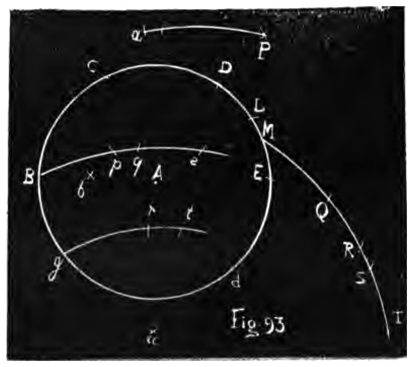

§§ 180–185: Triangolo rettangolo aureo (Keplero) e raggi dei cinque poliedri regolari (Fig. 91–93)¶
180. Prob. Descrivere (fig. 90) un triangolo rettangolo i di cui lati siano in proporzione aritmetica.
Sol. Fatta la costruzione della soluzione precedente (§ 178),
f. 0132 · p. 107col centro \(E\), e col raggio \(EQ\) si tagli la circonferenza in \(N\). Sarà il triangolo \(BNE\) il cercato.
Dim. Esso sarà rettangolo (31, lib. III). Posto poi \(AB = 1\), sarà \(EQ = EA + AQ = \frac{6}{5} = EN\). Ed avendosi \((BE)^2 = (EN)^2 + (BN)^2\) (47, lib. I), cioè \(4 = \frac{36}{25} + (BN)^2\), sarà \((BN)^2 = \frac{64}{25}\), quindi \(BN = \frac{8}{5}\), \(BE = \frac{10}{5}\) in proporzione aritmetica.
181. Prob. Descrivere (fig. 91) un triangolo rettangolo, i di cui lati siano in proporzione geometrica.
Sol. Con un raggio \(AB\), centro A si descriva un cerchio AB (\(BDd\)), e si faccia nella sua circonferenza ad \(AB = BC = CD = DE = Ed = dc\). Quindi si faccia a \(BD = Ba = Ea\), quindi ad \(Aa = D\beta = d\beta = Cb = cb\). Ora col raggio betab, e col centro E si tagli la circonferenza del cerchio in N. Il triangolo \(BNE\) sarà il cercato.

Dim. La \(AB\) resta divisa in beta in estrema e media ragione (§ 46). Quindi se si faccia \(AB = 1\); \(A\beta = x\), si avrà \(B\beta = 1 - x\); \(x^2 = 1 - x\); e quindi \(x = A\beta = \frac{1}{2}(\sqrt{5} - 1)\), donde risulta \(b\beta = 2A\beta = \sqrt{5} - 1 = EN\). Si ha poi \((BE)^2 = (EN)^2 + (BN)^2\) (31, lib. III; 47, lib. I), cioè \(4 = 6 - 2\sqrt{5} + (BN)^2\). Quindi \((BN)^2 = 2(\sqrt{5} - 1) = BE \cdot NE\). Si ha dunque \(BE : BN :: BN : NE\) (17, lib. VI). Dunque ecc.
182. Lemma. Posti i lati dei cinque poliedri regolari \(= 1\), sarà il raggio d’una sfera, che contiene
Dim. Per la 13, lib. XIII il diametro della sfera, che contiene la piramide compresa da quattro triangoli equilateri, è per potenza sesquialtero del lato della piramide, cioè posto il lato \(= 1\), è il diametro \(= \sqrt{\frac{3}{2}}\); quindi il raggio \(= \frac{1}{2}\sqrt{\frac{3}{2}}\).
Per la 15, lib. XIII il diametro della sfera, che contiene il cubo, è per potenza triplo del lato, cioè \(= \sqrt{3}\); quindi il raggio \(= \frac{1}{2}\sqrt{3}\).
Per la 14, lib. XIII il diametro della sfera, che comprende l’ottaedro, cioè quel corpo regolare, che ha otto faccie tutte triangoli equilateri, è duplo in potenza del lato d’uno di questi triangoli, cioè \(= \sqrt{2}\); quindi il raggio \(= \frac{1}{2}\sqrt{2}\).
Per la 17, lib. XIII la sfera, che comprende il dodecaedro, cioè quel corpo regolare, che ha dodici faccie tutte pentagoni regolari, comprende anche un cubo, che ha per lato una diagonale di quei pentagoni. Ma la diagonale \(BN\) (fig. 64) d’un pentagono \(ABLMN\), posto il lato \(AB = 1\), dico che è \(= \frac{1}{2}(\sqrt{5} + 1)\). Poichè è (§ 137) \(BN = bE = Ab + AE = \frac{1}{2}(\sqrt{5} - 1) + 1\) (§ 182) \(= \frac{1}{2}(\sqrt{5} + 1)\). Dunque la \(BN\), ossia la diagonale d’un pentagono, che ha il lato \(= 1\), è \(= \frac{1}{2}(\sqrt{5} + 1)\). Se sopra questa si forma un cubo, il diametro della sfera, che lo comprende, sarà di potenza triplo di questa, cioè \(= \frac{1}{2}(\sqrt{5} + 1)\sqrt{3}\). Dunque il raggio di questa sfera, che comprende il dodecaedro, è \(= \frac{1}{4}\sqrt{3} \cdot (\sqrt{5} + 1)\).
Per la 16, lib. XIII se sia \(AB\) il diametro della sfera, che comprende l’icosaedro, e presa (fig. 92) in esso la \(AC\) quadrupla di \(CB\), e alzata la perpendicolare \(CD\), che incontra in \(D\) la semicirconferenza \(ADB\), se col raggio \(DB\) si descrive un cerchio, e in questo cerchio un pentagono regolare, il lato di questo pentagono sarà il lato dell’icosaedro, cioè di quel corpo regolare, che ha venti faccie tutte triangoli equilateri. Ora il lato del pentagono ha quel
f. 0134 · p. 109rapporto al raggio del cerchio circoscritto, che ha la retta \(Bb\) alla \(BA\) (fig. 12) (§ 40). Ma posto \(AB = 1\), si ha \(Ab = \frac{1}{2}(\sqrt{5} - 1)\); \((Ab)^2 = \frac{1}{4}(6 - 2\sqrt{5}) = \frac{1}{2}(3 - \sqrt{5})\); \((Bb)^2 = (AB)^2 + (Ab)^2\) (47, lib. I) \(= \frac{5 - \sqrt{5}}{2}\). Quindi si avrà \(Bb : AB :: \sqrt{\frac{5 - \sqrt{5}}{2}} : 1\); ma si ha \(\sqrt{\frac{5 - \sqrt{5}}{2}} : 1 :: 1 : \sqrt{\frac{5 + \sqrt{5}}{10}}\).
Dunque posto il lato dell’icosaedro \(= 1\), sarà \(BD\) (Fig. 92) \(= \sqrt{\frac{5 + \sqrt{5}}{10}}\). Si ha poi \((AB)^2 = 5(BD)^2\) (16, lib. 13) \(= \frac{5 + \sqrt{5}}{2}\). Dunque \(AB = \sqrt{\frac{5 + \sqrt{5}}{2}}\), e il raggio \(= \frac{1}{2}\sqrt{\frac{5 + \sqrt{5}}{2}}\).
183. Prob. Dato il lato \(AB\) (Fig. 93) dei cinque corpi regolari, trovare il raggio delle diverse sfere, che li comprendono.
Sol. Col raggio \(AB\), centro \(A\), si descriva il cerchio \(BDd\), e si faccia nella sua circonferenza ad \(AB = BC = CD = DE = Ed\). Quindi si faccia a \(BD = Ba = B\alpha = E\alpha = Ea\). Col centro \(\alpha\), e col raggio \(\alpha a\) si descriva l’arco \(aP\). Collo stesso centro \(\alpha\), e col raggio \(\alpha B\) si descriva l’arco \(Bpqs\). Collo stesso centro \(\alpha\), e col raggio \(AB\) si descriva l’arco \(grt\). Collo stesso centro \(\alpha\), e col raggio \(BE\) si descriva l’arco \(MQRST\). Col raggio \(Aa\), e coi centri \(D, d\) si descrivano due archi, che si taglino in \(b\). Col raggio \(Ab\), e col centro \(E\) si tagli la circonferenza in \(L\). Si faccia ad \(AB = aP = MQ\), quindi


\(Aa = MR\), quindi ad \(Eb = MS\), quindi a \(BL = MT\). Si faccia poi ad \(aB = Pp\), quindi ad \(MB = Qq = Ss\), quindi ad \(Mg = Rr = Tt\). Sarà
\(Bp\) |
il raggio della sfera, che comprende |
il tetraedro |
\(Bq\) |
il raggio della sfera, che comprende |
il cubo |
\(gr\) |
il raggio della sfera, che comprende |
l’ottaedro |
\(Bs\) |
il raggio della sfera, che comprende |
il dodecaedro |
\(gt\) |
il raggio della sfera, che comprende |
l’icosaedro |
Dim. Posto \(AB = 1\), si ha \(\alpha a = 2\sqrt{2}\) (§ 100), \(\alpha B = \sqrt{3}\). Si ha poi \(\alpha a : \alpha B :: aP : Bp\) (§ 93), cioè \(2\sqrt{2} : \sqrt{3} :: 1 : Bp\). Sarà dunque \(Bp = \frac{1}{2}\sqrt{\frac{3}{2}}\). Quindi ecc. (§ 182).
Si ha pure (§ 93) \(\alpha M : \alpha B :: MQ : Bq\), cioè \(2 : \sqrt{3} :: 1 : Bq\). Quindi \(Bq = \frac{1}{2}\sqrt{3}\).
Parimente si ha \(\alpha M : \alpha g :: MR : gr\), cioè \(2 : 1 :: \sqrt{2} : gr\); quindi \(gr = \frac{1}{2}\sqrt{2}\).
Si ha egualmente \(\alpha M : \alpha B :: MS : Bs\). Ma \(MS = bE = \frac{1}{2}(\sqrt{5} + 1)\) (§ 182), dunque \(2 : \sqrt{3} :: \frac{1}{2}(\sqrt{5} + 1) : Bs\). Quindi \(Bs = \frac{1}{4}\sqrt{3} \cdot (\sqrt{5} + 1)\).
Si ha finalmente \(\alpha M : \alpha g :: MT : gt\). Ma \(MT = BL\). È poi \((BL)^2 = (BE)^2 - (EL)^2\) (31, lib. III; 47, lib. I), cioè \((BL)^2 = (BE)^2 - (Ab)^2 = 4 - \frac{1}{2}(3 - \sqrt{5})\) (§ 182) \(= \frac{5 + \sqrt{5}}{2}\). Quindi \(BL = MT = \sqrt{\frac{5 + \sqrt{5}}{2}}\); e però \(2 : 1 :: \sqrt{\frac{5 + \sqrt{5}}{2}} : gt\); e quindi \(gt = \frac{1}{2}\sqrt{\frac{5 + \sqrt{5}}{2}}\).
Dunque le distanze \(Bp, Bq, gr, Bs, gt\) saranno rispettivamente i raggi delle sfere, che comprendono i cinque corpi regolari piramide, cubo, ottaedro, dodecaedro, icosaedro.
184. Prob. Dato
f. 0136 · p. 111il raggio \(AB\) (Fig. 94) della sfera, che comprende i cinque corpi regolari, trovare i lati di essi.
Sol. Sia col raggio \(AB\), centro \(A\), descritto il cerchio massimo della sfera \(BDd\), e sia fatto nella sua circonferenza ad \(AB = BC = CD = DE = Ed\). Quindi a \(BD = Ba = Ea\); quindi ad \(Aa = Db = db\). Si faccia poi nella circonferenza ad \(AB = aH\), quindi ad \(Aa = EF = Hh\). Col centro \(a\), e col raggio \(aE\) si descriva l’arco \(ESQP\). Collo stesso centro \(a\), e col raggio \(BE\) si descriva l’arco \(Lstqp\). Collo stesso centro \(a\), e col raggio \(ah\) si descriva l’arco \(hT\). Si faccia ad \(Aa = EP\); ad \(AB = EQ\); ad \(Ab = ES\); a \(bF = hT\). Quindi si faccia ad \(EL = Pp = Qq = Ss\); quindi ad \(hL = Tt\). Sarà
\(Lp\) |
il lato del |
tetraedro |
\(Lq\) |
il lato del |
cubo |
\(Aa\) |
il lato del |
ottaedro |
\(Ls\) |
il lato del |
dodecaedro |
\(Lt\) |
il lato del |
icosaedro |
Dim. Si ha l’arco \(Eh\) eguale ad una ottava parte della circonferenza (§ 30); quindi \(ah = \sqrt{5}\) (§ 186). Essendo poi retto l’angolo \(bAF\), lo stesso che \(BAF\) per essere il punto \(b\) sulla \(AE\) (§§ 13, 27), sarà \(bF\) il lato del pentagono (§ 40), \(Ab\) il lato del decagono inscritto al cerchio \(BDd\) (§ 41). Posto dunque \(AB = 1\), sarà \(Ab = \frac{1}{2}(\sqrt{5} - 1)\) (§ 181), \((bF)^2 = (AF)^2 + (Ab)^2 = 1 + \frac{1}{4}(6 - 2\sqrt{5}) = \frac{5 - \sqrt{5}}{2}\); quindi \(bF = hT = \sqrt{\frac{5 - \sqrt{5}}{2}}\). Si avrà poi \(aE : aL :: EP : Lp\) (§ 93), cioè \(\sqrt{3} : 2 :: \sqrt{2} : Lp\). Sarà dunque \(Lp = 2\sqrt{\frac{2}{3}}\). Ora il rapporto del raggio della sfera al lato del tetraedro contenuto è \(\frac{1}{2}\sqrt{\frac{3}{2}} : 1\) (§ 182) \(:: 1 : 2\sqrt{\frac{2}{3}}\). Posto dunque il raggio \(AB\) della sfera \(= 1\), sarà \(Lp\) il lato del tetraedro contenuto.
Si avrà pure (§ 93) \(aE : aL :: Eq : Lq\), cioè \(\sqrt{3} : 2 :: 1 : Lq\); quindi \(Lq = 2\sqrt{\frac{1}{3}}\). Ora il rapporto del raggio della sfera al lato del cubo contenuto è \(\frac{1}{2}\sqrt{3} : 1\) (§ 182) \(:: 1 : 2\sqrt{\frac{1}{3}}\). Dunque ecc.
Si avrà parimente \(Aa = \sqrt{2}\) lato dell’ottaedro. Poichè il
f. 0137 · p. 112rapporto del raggio della sfera al lato dell’ottaedro contenuto è \(\frac{1}{2}\sqrt{2} : 1\) (§ 182) \(:: 1 : \sqrt{2}\). Dunque ecc.
Egualmente si avrà \(aE : aL :: ES : Ls\), cioè \(\sqrt{3} : 2 :: \frac{1}{2}(\sqrt{5} - 1) : Ls\); quindi \(Ls = \frac{\sqrt{5} - 1}{\sqrt{3}}\). Ora il rapporto del raggio della sfera al lato del dodecaedro contenuto è \(= \frac{1}{4}\sqrt{3} \cdot (\sqrt{5} + 1) : 1\) (§ 182) \(:: 1 : \frac{\sqrt{5} - 1}{\sqrt{3}}\). Dunque ecc.
Finalmente si avrà \(ah : aL :: hT : Lr\) (§ 93), cioè \(\sqrt{5} : 2 :: \sqrt{\frac{5 - \sqrt{5}}{2}} : Lt\). Quindi \(Lt = 2\sqrt{\frac{5 - \sqrt{5}}{10}}\). Ora il rapporto del raggio della sfera al lato dell’icosaedro contenuto è \(\frac{1}{2}\sqrt{\frac{5 + \sqrt{5}}{2}} : 1\) (§ 182) \(:: 1 : 2\sqrt{\frac{5 - \sqrt{5}}{10}}\). Dunque ecc.
185. Prob. Dato un punto \(B\) (Fig. 95) nella circonferenza di un cerchio dato; trovare altri due punti \(L\) ed \(M\), tali che il triangolo \(BLM\) sia equilatero, e tocchi il cerchio col lato \(LM\) alla metà di esso lato in \(E\).
Sol. Si faccia al raggio del cerchio dato \(AB = BC = CD = DE = Ed\) nella circonferenza di esso. Quindi si faccia a \(BD = Ba = Ea\). Col centro \(a\), e col raggio \(aA\) si descriva un arco, che passi per \(\alpha\). Col centro \(E\), e col raggio \(EA\) si descriva un arco, che lo tagli in \(\alpha\). Collo stesso raggio \(\alpha E\), e col centro \(\alpha\) si tagli la circonferenza in \(P\). Ora col raggio \(EP\), e col centro \(E\) si descriva un arco, che passi per \(L\) ed \(M\). Col raggio \(aP\), e coi centri \(D\) e \(d\) si segnino due archi, che taglino il precedente in \(L\) ed \(M\). Saranno \(L\) ed \(M\) i due punti cercati.
Dim. Confrontando i punti \(a, A, E, \alpha, P\) di questa figura 95 coi
f. 0138 · p. 113punti \(Q, A, p, B, P\) della figura 3 dall’equazione \((AQ)^2 = (Ap)^2 + (pQ)^2 - pP \cdot pQ\) appartenente alla fig. 3 (§ 17) si ricaverà l’equazione per questa figura 95, \((Aa)^2 = (AE)^2 + (Ea)^2 - EP \cdot Ea\). Quindi (§ 27) \(2 = 1 + 3 - EP \cdot \sqrt{3}\). Quindi \(2 = EP \cdot \sqrt{3}\); ed \(EP = \frac{2}{3}\sqrt{3}\). Essendo poi i tre punti \(E, P, a\) nella stessa retta (§ 13), sarà \(Pa = Ea - EP = \frac{1}{3}\sqrt{3}\).
Si supponga guidata la \(BE\), che tagli in \(R\) la \(Dd\); sarà (§ 104) \(BR = \frac{3}{2}\); \(RD = \frac{1}{2}\sqrt{3}\); \(BE = 2\); quindi la quarta proporzionale alle tre \(BR, RD, BE\) sarà \(= \frac{2}{3}\sqrt{3} = EM\). Sarà pure (§ 104) \(RE = \frac{1}{2}\), \(BD = \sqrt{3}\) (§ 2). Quindi la quarta proporzionale alla tre \(BR, BD, RE\) sarà \(= \frac{1}{3}\sqrt{3} = DM\). Saranno dunque le \(EM, DM\) della quantità richiesta, perchè il triangolo \(BEM\) riesca simile al triangolo \(BRD\) (2, lib. VI). Dunque saranno simili, poichè il punto \(M\) non potrebbe cascare in altro luogo (8, lib. I). Si proverà nella stessa maniera, che il triangolo \(BRd\) è simile al triangolo \(BEL\). Quindi il triangolo \(BDd\) è simile al triangolo \(BML\) (20, lib. VI). Dunque anche questo è equilatero. Sono inoltre retti gli angoli \(BEM, BEL\) eguali agli angoli \(BRD, BRd\), e sono eguali le rette \(EM, EL\). Dunque il triangolo \(BLM\) è il cercato.